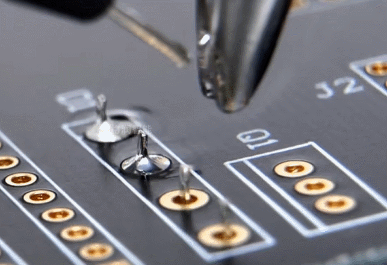

<!DOCTYPE lake>
<h3 data-lake-id="bBU2I" id="bBU2I"><span data-lake-id="u253cb5c9" id="u253cb5c9">直插件焊接</span></h3><p data-lake-id="u3890daf8" id="u3890daf8"></p><p data-lake-id="ub3374fed" id="ub3374fed"><strong><span data-lake-id="u32b5bc5a" id="u32b5bc5a">焊接流程：</span></strong></p><ol list="u3bd1236e"><li data-lake-id="u409ebb63" fid="u57926bf1" id="u409ebb63"><span data-lake-id="u9dbc9254" id="u9dbc9254">烙铁头略微加锡</span></li><li data-lake-id="uc35467d9" fid="u57926bf1" id="uc35467d9"><span data-lake-id="u29fd20b3" id="u29fd20b3">同时加热焊盘、管脚（1~2秒）</span></li><li data-lake-id="u32b45f85" fid="u57926bf1" id="u32b45f85"><span data-lake-id="u0ad1397f" id="u0ad1397f">上锡、离锡</span></li><li data-lake-id="uf113b71e" fid="u57926bf1" id="uf113b71e"><span data-lake-id="ub2fd74f7" id="ub2fd74f7">烙铁头迅速离开</span></li></ol><p data-lake-id="u1ca4c944" id="u1ca4c944"><br/></p><p data-lake-id="u13783978" id="u13783978"><strong><span data-lake-id="u98e35451" id="u98e35451">烙铁头注意事项：</span></strong></p><ul list="u1c1d5de9"><li data-lake-id="uebd532e7" fid="u2e975c91" id="uebd532e7"><span data-lake-id="u55ec7550" id="u55ec7550">如果焊盘不沾锡，可预先涂一些松香、助焊剂到焊盘</span></li><li data-lake-id="u313a8c89" fid="u2e975c91" id="u313a8c89"><span data-lake-id="udc171a81" id="udc171a81">烙铁通电时，不要随意放置烙铁头，避免烙铁头融化周围设备</span></li><li data-lake-id="u3aa8a629" fid="u2e975c91" id="u3aa8a629"><span data-lake-id="ua20af90d" id="ua20af90d">使用完毕将烙铁头留一层锡，防止烙铁头氧化，导致变黑不沾锡</span></li><li data-lake-id="u5820633c" fid="u2e975c91" id="u5820633c"><span data-lake-id="u8b14d5a5" id="u8b14d5a5">电烙铁不用时，要及时断电，避免长时间高温氧化烙铁头</span></li><li data-lake-id="u09157582" fid="u2e975c91" id="u09157582"><span data-lake-id="udb29adf3" id="udb29adf3">斜口钳剪除多余引脚时，另一只手按着引脚，或捏着、捂着引脚，避免崩到眼睛或他人</span></li></ul>